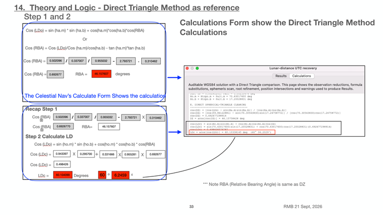

Previous | Contents | Next

14. Theory and Logic - Direct Triangle Method as reference
Step 1 and 2
Calculations Form show the Direct Triangle Method
Calculations
*** Note RBA (Relative Bearing Angle) is same as DZ
33 RMB 21 Sept, 2026